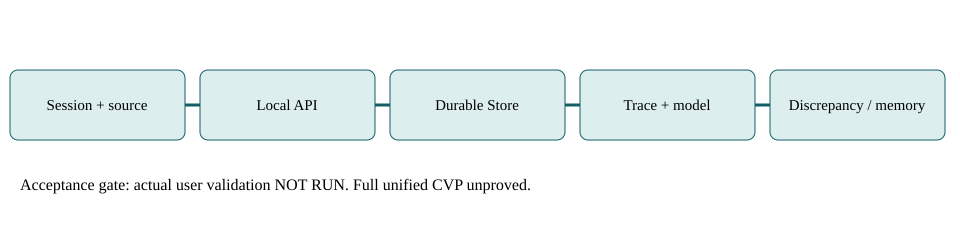

Snapshot `tracera-state-forward-20261017-q1` | Generated 2026-10-17T09:39:28.530213+00:00
Exact candidate `3fd3310fb98fdd2f9bca99eddd669f974fb1fb61`; baseline `ae68aea7febd772282606bf1e142d507316cfea0`.
Full product acceptance: NOT ESTABLISHED. The selected-assessment reducer is not full product completion.
Tracera is an original owned project, with accepted unified intent: local-first trace/session linking, memory distillation and audit replay plus persistent product modelling and discrepancy discovery. Q1 delivered a real durable product-observation API, detector identity corrections, SQLite/PostgreSQL atomicity and a restart/replay runtime journey. Full unified CVP and real user acceptance remain unproved. Source PR1157 is open; no merge or production promotion.
Direct user requirements: complete API/frontend gap inventory, named artifact fidelity, complete data, CIVIS zero-item note, read-only original audit then explicit authorized implementation, preserved checkouts and no merges. Registry at05e1638 defines local-first trace/session dependency reasoning, memory distillation and audit replay. Its CVP also includes desktop. docs5 explicitly calls its persistent product-model program proposed; it is not authority to erase Registry identity. Draft WP07 is a design proposal, not accepted wholesale. Preserve contradiction for user decision. UPDATE2026-10-17T09:22:59Z: user explicitly chose BOTH with unified scope. This supersedes the unresolved authority question; preserves both branches and adds a missing integration obligation. No implementation credit is earned by changing the scope denominator.
Q0 exactmain ae68 was built and exercised in an isolated Windows SQLite runtime: readiness, valid issue ingest, persisted Story after restart; empty ingest422 and pagination400/missing404. That proves this limited API path, not full product semantic import or trace-memory CVP. Historical deployed ports8080/8091 were later refused; current public path behind Access was not qualified. No current GUI, desktop installation, release or actual beneficiary acceptance is claimed. Q1 now additionally proves actual candidate binary47a7a5bba1eaff02264b6c338ee0d748312c83b8012cd3b1d4512f91656e0daf on owned loopback19147: typed batch200, persisted read200, real freshness detector finding200 referencing observation, foreign product404, restart exact read equality, replay200 accepted0/replayedtrue. Owned processes stopped. This is a synthetic local API journey, not an actual external producer or user session.
Agents/session and external source adapters -> Axum authenticated routes -> Store -> SQLite or PostgreSQL. Canonical Items, Story/Evidence/TraceLink and SWEE graph are distinct models. Product semantic observations add product/baseline/capability/source scope in Q1. Frontend projections and two MCP packages may expose different entrypoints; no proof yet all share one coherent beneficiary model. Memory distiller currently owns Vec state and Instant in process; source presence is not durable cross-session API acceptance.
Registry identity-preserving CVP: one user/machine/durable workspace captures a real session, queries cross-run spec dependency, distills memory consumed by next session, and survives restart locally; desktop primary nondeveloper install surface retained. docs5 candidate CVP: real owned product import, genuine source-backed discrepancy, bounded navigation, sourcechange/restart. Both are now explicitly unified by the user decision. An appropriate MVP adds only agreed retained authoring/typed views and safe local delivery around the selected CVP; it cannot be declared merely because Q1 batch persistence passes. Unified bridge acceptance: capture actual authorized session/run with stable product, capability, baseline and source IDs; persist causal links; explain a genuine discrepancy and affected sessions/capabilities; derive attributable memory consumed next session; reconcile source changes and restart without duplication/leakage. This bridge is not yet qualified.
Raw implementation: Q1 code/checkpoints reported in candidate receipts. Verified engineering: exact selected SQLite/PG/router/detector tests and independent review only. Complete usable journeys: Q0 limited API import/reopen; no full identity-preserving CVP yet. Real user validation/value: no receipt, unknown total denominator and no earned acceptance. Full-product numeric progress is undefined; all four numerator/denominator values null until accepted nonoverlapping baseline is locked. Q1 selected raw implementation checkpoints3/3 (identity/durability/mounted API); engineering scope qualified by17detector,96library,121binary,4existingDB,5newSQLite and1explicit PostgreSQL tests, strict clippy/fmt/diff. One bounded independent reviewer inspected actual code/logs, did not rerun suite. One local synthetic API journey succeeded; zero actual user-validation receipts. These selected counts are not full-product numerators.
Prior audit29issues +44view rows =73inventory rows;7baselines652promise records;284frontend method/reference rows. Those denominators overlap semantically and are not percentages of current product completion. Historical TRACERA533items and CIVIS0 were genuine nonstub observations. Earlier43stub200responses among57GETprobes describe old deployment. New source honest501 is improvement in truthfulness, not implementation of missing feature. Old code-count estimates240+60+10 were overlapping and are superseded by bounded unique literal census, not summed.
Positive fixture proof must be paired with foreign product/capability/baseline/source, malformed IDs, replay conflict, concurrent identical replay, late rollback and reopened persistent state. Alternative explanation: empty result may be legitimate zero rather than stub; use nonstub Store path and source counts. A501 may be honest missing capability rather than regression. Unit detector pass may hide unmounted data path; require router/database journey. Current owner logs are originating evidence, independent review is separate but does not count as rerunning tests. Fullsuite exposed stale reprobe threshold>=48 while base root literal list had35; fix-forward exact35 retained route assertions and explicit unknown404, not feature tests. Original RED and final GREEN both preserved in owner receipts. Isolated per-route reprobes do not prove all mounted routes.
Loopback-only trusted singleoperator is materially different from multiuser hosted deployment. Shared bearer does not establish perproject authorization. Selfhost docs explicitly warn forward-auth placeholder is not public protection. Preserve failclosed gates; no policy bypass. Need privateevidence export controls, untrustedprose/data injection tests, principal/projectnegativecases, payloadbounds, restoreintegrity. Hashes prove byteidentity not truthful claims/authorship. No credentials are included in this dossier.
Historical sidebar44rows had40project links gated by ProjectNotFound and3typed detailIDs unavailable. These are stale observations requiring current requalification. Source ApiView advertises project/item writes inconsistent with unavailable server paths: make status generated from a real capability contract. Keyboard focus, screenreader labels, loading/errors/trueempty and largepagination remain unqualified. Current RustCLI stack management is not historical Typer fullCRUD parity; historical matrix explicitly labels retired Python stack. New independent source review: packaged desktop defaults external rich gateway18000 and only explicit legacy override starts Compose; standalone install/runtime not qualified. Desktop/main.js defaults hosted endpoint while frontend desktop target defaults loopback; choose supported shell. Dormant updater declares signature/publicKey but checked download path validates SHA only and no streaming cap; module unimported, so not a mounted exploit. Activate only with authenticity/stream limits and negative tests.
GitHub prior metadata says original project fork=false,parent=null; oldtracertm name does not imply external upstream fork. Do not invent upstream divergence requirements. Python->Rust transition and multiple desktop/MCP surfaces do require retainedbehavior/data/consumer parity and explicit retirement decisions. Snapshot import and Q1typedbatch do not prove all historic data migrated; preserve durable records and rehearse update/rollback without history rewrite.
docs5 shortlist manualGit/search, Backstagecatalog, StrictDoc, SCIP/LSPdependencysearch and hotspotanalysis remains a hypothesis ledger, not verified current comparisons. No unsupported superiority or cost claims. First compare exact owned seededgap task under matched input revisions and separate idiomatic alternatives; record missingdynamicrelationships, staleevidence, falsepositive/negative, time/interventions/privacy and maintenance costs. Reuse localDB/nativeindex/testreports before customengines where actual consumer outcome permits.
Actual AgilePlus wrapper absent and local8765 connection failed in bounded collector. Engine state UNKNOWN, no invented feature/WP IDs; this dossier is an assessment snapshot, not competing taskregistry. Existing heartbeat sunsetblocked after unchangedexternalblocker ticks; no claim new scheduler installed. No paidCI, productionrestart, deploymentpromotion or merge occurred. Actual cloudmonthlycost unknown; local64GiBWindows compute suitable heavierbuilds, localmac selected smallPDF/schema work.
The accepted unified identity requires a detailed nonoverlapping obligation baseline before mature-completion scoring. Q1verifiedcandidate -> independentreview -> localrealadapterjourney -> canonical project/source/linkidentity -> selectedCVP ingest/query/memory or discrepancy UI -> freshinstall/restore -> actualuserfeedback -> retainedparityclosure. Integrate exactcandidate before claiming deployedbehavior. Parallelize nonoverlap frontendartifactfidelity, trace-memory wiring and assurance; sharedStore/schema owners serialize integration.
Planning ranges are expert scenarios, not statisticalP50/P90. Comparableaccepted fullCVP sample size0; observedQ1 narrowed contract work and Q0 isolatedbuild are different work classes. Next30m: validate candidate targeted gates and consolidate exactreceipt;1h: reviewedcodePR plus generateddocket publication if hooks pass;4h: one realownedadapter dataset through scopedpersist/read/detector path and truthful UI/APIstatus;24h: exercise selectedlocalCVP integration or expose preciseblockeddependency, plus restore/errorcontrols. Humanintentdecision and realuserfeedback are externalwaiting, not agentcoding effort. Actual narrowed Q1 delivery ~24minutes versus prior25minute estimate is one sample of narrowly scoped engineering output, not accepted fullCVP calibration. Next milestones are measured from this snapshot, not promises of user acceptance.
Productmodel candidateCVP remaining24-44engineeringdays from prior audit is lowconfidence and may shrink materially with scoped acceptance; trace-memoryCVP has not been decomposed/estimated sufficiently, so time unknown until next4h mapping. At constrained2seniorowners+agents effective1.2-1.5engdays/workday, former scenario roughly4-8workweeks, not a commitment. Full retainedv1 prior95-215engineeringdays is provisional lower/likely/high planning spread, not ceiling; unresolved disposition of the 652 historical promise records prevents maturecompletion forecast. Do not divide by nominalagentcount or pretend everyunknown is scaling.
No new paidresource authorized or spent by this doclane. PDF/schema smalllocalCPU job; heavyRustWindows placement available. Actual computehours, hostingbill, bandwidth, storagegrowth and maintenancecost not measured. Budget planning: reserve20-40percent of scoped implementation effort for integration/negativecontrols/rework until comparableoutcomes qualify; this is explicit uncalibrated planning allowance, not observedrate. Reviewqueue and externalfeedback add walltime independently.
D01 unified identity accepted: retain both goal branches; retire nothing without explicit authority. D02no merge/deploy without exactauthorization. D03keep historicalevidence immutable; correctionappend rather than rewrite. R01crossproduct/namespacecollision highimpact; typedbatch isolationcontrols. R02silentemptyhealth highimpact; explicit unavailable/unknown. R03privateevidence publicleak critical; export/authorizationnegativecontrols. R04staleevidence medium/high; sourceboundfreshness. Stop promotion on lossidentity, dataownership, privacy, atomicity or failclosedauth; continuedocs alone never closes product.
Canonical typedrecords and frozeninputs generate MarkdownHTMLPDFCSV; schema validator is structural only. Sourceandoutputhashes bind snapshot, evaluator and renderer. NewdocPR is separate from sourcecandidate and audit1132. Registry pointer must reference actual productcommit and samePDFhash afterremoteverification. Safari command success proves launchrequest, not that user read or acceptedPDF. Every remote outcome remains explicit until verified; localfile/openPR/merged/installed/accepted are separate states.
Intent: actual Registry intent/CVP/boundary, docs5 dossier, README and WP07 inspected; full historic conversation archive and1963commit history NOT reinspected. Implementation: source baseline architecture, governance, memory state, unavailable route families and prior bounded audit inspected; all functions/optional build profiles NOT examined. Frontend: all63tracked route filenames and955lexical API candidate lines enumerated, not all journeys executed. Explicit family census197unique literals excludes direct router, mixed/dynamic registrations and fallback, so differs from earlier216/39module census and is not additive. Assurance: Q1 owner tests and one independent bounded review, no numeric wholeproduct coverage or new AX/browser/user tests. Deployment: Q0 isolated receipt and historic unavailable deployed path, no current production qualification. Releases/cost/adoption: NOT inspected or unmeasured. Research: shortlist from proposed dossier, no new comparative pilot. These limits are coverage gaps, not passes.
After the locked Q1 subject3fd3310, follow-on source097015d0d9d10d7c8721b67a57a40856942d8e5b (PR1157 open) mounts the existing benchmark envelope adapter to durable product observations with causal run/session/attempt/replay metadata. Real isolated binary011f017e2b8d56ef3fc14ad7aa503580392c23fde53bc17b93ab67d2bbba898b exercised a FIXTURE envelope, detector and restart on owned port19148, then stopped. Owner receipt reports96library123binary4existingDB6SQLite tests; mounted5/5; historical Q1payload replay1; strict clippy/fmt. This is fixture-backed integration, NOT an actual external producer or tenant-authorized user acceptance. Raw receipt raw/bridge-delivery.json binds the separate revision; Q1snapshot remains immutable. At03:22PDT main independently advanced9be711bb9fe83417046590a1d2d21019273bce37; neither candidate is claimed integrated with that main or deployed. Hosted checks remain UNSTABLE. Next useful result: actual authorized producer and real owned product/trace navigation through this bridge.
Direct user accepted explicitly unified trace/session/memory/audit and product/discrepancy scope at2026-10-17T09:22:59Z.
Status: PASS | Review: PROPOSED | Owner: Tracera product owner
Location: inputs/registry-intent.md; inputs/registry-cvp.md; inputs/docs5-DOSSIER.md; source baseline ae68aea7febd772282606bf1e142d507316cfea0 unless Q1 receipt states candidate.
Closure: Owning intent records retain both and define identity-preserving bridge acceptance; no retrospective feature acceptance.
Negative control: Foreign scope/stale/missing/failed dependency must fail honestly; no fabricated success
Dependencies: none defined; effort: Unestimated pending exact retained scope
Capture real input/tool/output session to durable local workspace with source/spec/session identifiers.
Status: UNKNOWN | Review: PROPOSED | Owner: Tracera product owner
Location: README.md; crates/tracera-server/src/router.rs:153-173; source baseline ae68aea7febd772282606bf1e142d507316cfea0 unless Q1 receipt states candidate.
Closure: Real session capture, exact count/content after restart; invalid/foreign/dangling edges rejected.
Negative control: Foreign scope/stale/missing/failed dependency must fail honestly; no fabricated success
Dependencies: G01; effort: Unestimated pending exact retained scope
Answer affected prior sessions when a spec changes, using persisted trace graph.
Status: UNKNOWN | Review: PROPOSED | Owner: Tracera product owner
Location: crates/tracera-server/src/handlers/governance.rs:9-45; source baseline ae68aea7febd772282606bf1e142d507316cfea0 unless Q1 receipt states candidate.
Closure: Seed known dependency plus unrelated session; persisted query yields exact affected set after reopen. Supplied-links computation alone insufficient.
Negative control: Foreign scope/stale/missing/failed dependency must fail honestly; no fabricated success
Dependencies: G01; effort: Unestimated pending exact retained scope
Distill lastN real sessions into stable memory consumable by next session with provenance and privacy.
Status: FAIL | Review: PROPOSED | Owner: Tracera product owner
Location: crates/tracera-server/src/memory/distillation/distiller.rs:12-26; source baseline ae68aea7febd772282606bf1e142d507316cfea0 unless Q1 receipt states candidate.
Closure: Persist memory, link source sessions and serve real consumer; restart restores same accepted entry; private/untrusted input cannot escape into public projection.
Negative control: Foreign scope/stale/missing/failed dependency must fail honestly; no fabricated success
Dependencies: G01; effort: Unestimated pending exact retained scope
Reproduce who ran what/when per workspace; evidence freshness and integrity explicit.
Status: UNKNOWN | Review: PROPOSED | Owner: Tracera product owner
Location: crates/tracera-server/src/handlers/evidence.rs; source baseline ae68aea7febd772282606bf1e142d507316cfea0 unless Q1 receipt states candidate.
Closure: Real evidence/source/run timestamps survive restart, altered/missing/stale evidence fails honestly; audit export replay verified.
Negative control: Foreign scope/stale/missing/failed dependency must fail honestly; no fabricated success
Dependencies: G01; effort: Unestimated pending exact retained scope
Durable typed product observations now verified at3fd3310; full actual-product discrepancy UI remains unfinished.
Status: UNKNOWN | Review: PROPOSED | Owner: Tracera product owner
Location: crates/tracera-server/src/product/; docs/WP-07-product-graph-design.md (DRAFT); source baseline ae68aea7febd772282606bf1e142d507316cfea0 unless Q1 receipt states candidate.
Closure: Real owned product import and independently adjudicated gap; no cross-product/baseline/capability leakage; source change invalidates affected evidence.
Negative control: Foreign scope/stale/missing/failed dependency must fail honestly; no fabricated success
Dependencies: G01; effort: Unestimated pending exact retained scope
Sources, products and namespaces preserved across replay, partial failure and complete pagination.
Status: UNKNOWN | Review: PROPOSED | Owner: Tracera product owner
Location: crates/tracera-server/src/ingest/persist.rs:39-107; source baseline ae68aea7febd772282606bf1e142d507316cfea0 unless Q1 receipt states candidate.
Closure: Two sources same externalID stay distinct; retry idempotent; late error atomic or explicit recoverable partial contract. Q1 product batch does not automatically repair Story importer.
Negative control: Foreign scope/stale/missing/failed dependency must fail honestly; no fabricated success
Dependencies: G01; effort: Unestimated pending exact retained scope
All owned projects have stable identity; CIVIS genuine zero items distinct from absent/unavailable.
Status: UNKNOWN | Review: PROPOSED | Owner: Tracera product owner
Location: crates/tracera-server/src/pg_store/projects.rs; historical audit; source baseline ae68aea7febd772282606bf1e142d507316cfea0 unless Q1 receipt states candidate.
Closure: Item-only and empty project load correctly; all pages complete; failure never reported as empty.
Negative control: Foreign scope/stale/missing/failed dependency must fail honestly; no fabricated success
Dependencies: G01; effort: Unestimated pending exact retained scope
Every named view X renders only complete artifact X, correct project/type and detail fields.
Status: UNKNOWN | Review: PROPOSED | Owner: Tracera product owner
Location: frontend/apps/web/src/pages/projects/views/; inputs/TRACERA-HISTORICAL-VIEW-COVERAGE.csv; source baseline ae68aea7febd772282606bf1e142d507316cfea0 unless Q1 receipt states candidate.
Closure: Click every required sidebar/view and representative typed detail using real IDs; 44 historical rows require current requalification.
Negative control: Foreign scope/stale/missing/failed dependency must fail honestly; no fabricated success
Dependencies: G01; effort: Unestimated pending exact retained scope
Real ADR/contract/feature/scenario aggregates plus honest health/evidence denominator.
Status: FAIL | Review: PROPOSED | Owner: Tracera product owner
Location: crates/tracera-server/src/routes/specs.rs; frontend SpecificationDashboard.tsx; source baseline ae68aea7febd772282606bf1e142d507316cfea0 unless Q1 receipt states candidate.
Closure: Summary shape matches summary-hooks; totals reconcile complete typed collections; missing compliance/pass data null; failures distinct from zero.
Negative control: Foreign scope/stale/missing/failed dependency must fail honestly; no fabricated success
Dependencies: G01; effort: Unestimated pending exact retained scope
Accepted project/item editing and intent->code->test/evidence linking durable and authorized.
Status: FAIL | Review: PROPOSED | Owner: Tracera product owner
Location: crates/tracera-server/src/handlers/projects.rs; routes/links.rs; source baseline ae68aea7febd772282606bf1e142d507316cfea0 unless Q1 receipt states candidate.
Closure: Actual scoped CRUD and links survive restart; invalid/cross-project updates rejected; UI cannot advertise unavailable methods as implemented.
Negative control: Foreign scope/stale/missing/failed dependency must fail honestly; no fabricated success
Dependencies: G01; effort: Unestimated pending exact retained scope
Explainable bounded navigation, explicit truncation/unsupported dynamic relationships.
Status: UNKNOWN | Review: PROPOSED | Owner: Tracera product owner
Location: crates/tracera-server/src/routes/graph.rs; routes/search.rs; source baseline ae68aea7febd772282606bf1e142d507316cfea0 unless Q1 receipt states candidate.
Closure: Known source anchor found; bounded query terminates cycles and marks truncation; no fabricated edge or silently missing page.
Negative control: Foreign scope/stale/missing/failed dependency must fail honestly; no fabricated success
Dependencies: G01; effort: Unestimated pending exact retained scope
Distinguish test definitions, execution, results and freshness.
Status: FAIL | Review: PROPOSED | Owner: Tracera product owner
Location: crates/tracera-server/src/routes/test_runs.rs; routes/spec_analytics.rs; source baseline ae68aea7febd772282606bf1e142d507316cfea0 unless Q1 receipt states candidate.
Closure: Ingest actual native report, preserve failed cases/denominators and source revision; unsupported execution honest unavailable.
Negative control: Foreign scope/stale/missing/failed dependency must fail honestly; no fabricated success
Dependencies: G01; effort: Unestimated pending exact retained scope
Current Rust interfaces share canonical data and errors; historical Python oracle not mistaken for current implementation.
Status: UNKNOWN | Review: PROPOSED | Owner: Tracera product owner
Location: Cargo.toml; crates/tracera-cli/; crates/tracera-mcp/; crates/tracertm-mcp/; source baseline ae68aea7febd772282606bf1e142d507316cfea0 unless Q1 receipt states candidate.
Closure: One real supported operation roundtrips same IDs across required interfaces; unsupported declared; demo modes excluded from acceptance.
Negative control: Foreign scope/stale/missing/failed dependency must fail honestly; no fabricated success
Dependencies: G01; effort: Unestimated pending exact retained scope
Trusted single-user local boundary explicit; shared URL protected; secrets and evidence remain private.
Status: UNKNOWN | Review: PROPOSED | Owner: Tracera product owner
Location: crates/tracera-server/src/auth.rs; router.rs; deploy/selfhost/README.md; source baseline ae68aea7febd772282606bf1e142d507316cfea0 unless Q1 receipt states candidate.
Closure: 401 missing credential,403/404foreign scope, no public backend bypass, redacted logs/export, payload limits and hostile prose tests.
Negative control: Foreign scope/stale/missing/failed dependency must fail honestly; no fabricated success
Dependencies: none defined; effort: Unestimated pending exact retained scope
SQLite/PG durable accepted models, backup/restore, upgrade/cutover with original records preserved.
Status: UNKNOWN | Review: PROPOSED | Owner: Tracera product owner
Location: crates/tracera-server/src/db.rs; migrations-*; Q0/Q1 receipts; source baseline ae68aea7febd772282606bf1e142d507316cfea0 unless Q1 receipt states candidate.
Closure: Real persistent reopen plus crash/backup/restore/migration trial; compare IDs/content beforeafter; old/new data contract explicit.
Negative control: Foreign scope/stale/missing/failed dependency must fail honestly; no fabricated success
Dependencies: none defined; effort: Unestimated pending exact retained scope
Real local server+web and packaged nondeveloper desktop, update/recovery under accepted platform boundary.
Status: UNKNOWN | Review: PROPOSED | Owner: Tracera product owner
Location: desktop/README.md; crates/tracera-tauri/; docs/ARCHITECTURE.md; source baseline ae68aea7febd772282606bf1e142d507316cfea0 unless Q1 receipt states candidate.
Closure: Fresh install useful journey, local-first no mandatory remote API, update retains data and recoverable previous artifact.
Negative control: Foreign scope/stale/missing/failed dependency must fail honestly; no fabricated success
Dependencies: G01; effort: Unestimated pending exact retained scope
SourceSHA->binaryhash->configuration->database->reachable URL attested.
Status: UNKNOWN | Review: PROPOSED | Owner: Tracera product owner
Location: inputs/TRACERA-Q0-RUNTIME-QUALIFICATION.md; source baseline ae68aea7febd772282606bf1e142d507316cfea0 unless Q1 receipt states candidate.
Closure: Current hosted and installed artifact exact identity, authenticated real path; Q0 isolated readiness does not qualify production.
Negative control: Foreign scope/stale/missing/failed dependency must fail honestly; no fabricated success
Dependencies: G01; effort: Unestimated pending exact retained scope
Keyboard navigation, accessible errors/loading/empty states, fresh-start docs and truthful API capability labels.
Status: UNKNOWN | Review: PROPOSED | Owner: Tracera product owner
Location: frontend/apps/web/src/pages/projects/views/ApiView.tsx; frontend/apps/web/src/routes/; source baseline ae68aea7febd772282606bf1e142d507316cfea0 unless Q1 receipt states candidate.
Closure: Keyboard/focus/labels/contrast assistive audit without captures; no mock data presented as real; documented command starts actual profile.
Negative control: Foreign scope/stale/missing/failed dependency must fail honestly; no fabricated success
Dependencies: G01; effort: Unestimated pending exact retained scope
Meaningful positive/negative integration, critical coverage, no masked gates, dependency threats assessed.
Status: UNKNOWN | Review: PROPOSED | Owner: Tracera product owner
Location: .github/workflows/coverage.yml; lefthook.yml; frontend/apps/web/vitest.config.ts; source baseline ae68aea7febd772282606bf1e142d507316cfea0 unless Q1 receipt states candidate.
Closure: Run required local gates with explicit coverage denominator/floor; deliberate regression fails; masked Ruff/Python collection fixed if retained.
Negative control: Foreign scope/stale/missing/failed dependency must fail honestly; no fabricated success
Dependencies: none defined; effort: Unestimated pending exact retained scope
Test reuse/retain/adopt hypothesis against real beneficiary task, not marketing superiority.
Status: NOT_RUN | Review: PROPOSED | Owner: Tracera product owner
Location: inputs/docs5-DOSSIER.md:comparators; source baseline ae68aea7febd772282606bf1e142d507316cfea0 unless Q1 receipt states candidate.
Closure: Version-pin manualworkflow, catalog/search, requirements/source links and dependency exploration peers; matched seeded cases plus idiomatic comparisons.
Negative control: Foreign scope/stale/missing/failed dependency must fail honestly; no fabricated success
Dependencies: G01; effort: Unestimated pending exact retained scope
Owned startup/shutdown, logs, backup schedule, cost/resource boundary and sunset owner.
Status: UNKNOWN | Review: PROPOSED | Owner: Tracera product owner
Location: docs/04-guides/DEPLOYMENT_GUIDE.md; prior heartbeat ledger; source baseline ae68aea7febd772282606bf1e142d507316cfea0 unless Q1 receipt states candidate.
Closure: Restore rehearsal, dependency failure, resource bounds and explicit recurring-job owner; no billed services added; actual hosting cost unknown.
Negative control: Foreign scope/stale/missing/failed dependency must fail honestly; no fabricated success
Dependencies: G01; effort: Unestimated pending exact retained scope
Real user completes useful identity-preserving journey and confirms value.
Status: NOT_RUN | Review: PROPOSED | Owner: Tracera product owner
Location: No actual user-session/feedback receipt supplied; source baseline ae68aea7febd772282606bf1e142d507316cfea0 unless Q1 receipt states candidate.
Closure: Unfamiliar authorized user real owned input, recorded task outcome/interventions/feedback, failures retained; fixture pass does not qualify.
Negative control: Foreign scope/stale/missing/failed dependency must fail honestly; no fabricated success
Dependencies: G01; effort: Unestimated pending exact retained scope
Retain652 baseline promise records and29historical gaps without treating overlaps as accepted scope or closure.
Status: UNKNOWN | Review: PROPOSED | Owner: Tracera product owner
Location: inputs/TRACERA-BASELINE-PROMISES.csv; inputs/TRACERA-GAP-INVENTORY.csv; source baseline ae68aea7febd772282606bf1e142d507316cfea0 unless Q1 receipt states candidate.
Closure: Each retained promise maps accepted goal/current contract/closure proof, or explicit authority for supersession/defer/retire; no silent sunset.
Negative control: Foreign scope/stale/missing/failed dependency must fail honestly; no fabricated success
Dependencies: G01; effort: Unestimated pending exact retained scope
Actual session/run -> source/product/capability observations -> discrepancy and affected dependencies -> attributable durable memory consumed next session.
Status: UNKNOWN | Review: PROPOSED | Owner: Tracera implementation owner
Location: README.md; router.rs codex session endpoints; Q1 product observations API; source baseline ae68aea7febd772282606bf1e142d507316cfea0 unless Q1 receipt states candidate.
Closure: Real authorized producer and source anchor, semantic causal navigation, exact restart/replay equality and foreign-product negative controls; meaningful actual user outcome.
Negative control: Foreign product/baseline/source cannot gain evidence credit; malformed replay rejected atomically
Dependencies: G02, G03, G04, G06, G07, G15, G16; effort: First4h decomposition; full duration uncalibrated
{ "project_commit": null, "project_pr": null, "registry_commit": null, "registry_pr": null, "safari": "NOT_OPENED", "code_pr": "https://github.com/KooshaPari/Tracera/pull/1157", "code_sha": "3fd3310fb98fdd2f9bca99eddd669f974fb1fb61", "code_state": "OPEN; UNSTABLE hosted checks; unmerged; not deployed", "registry_intent_pr": "https://github.com/KooshaPari/PhenoRegistry/pull/662", "registry_intent_sha": "22e8cdeb82f868faa805e884bdae63a9c715e0bc" }
Input hashes identify bytes, not truth or authorship. Inputs, canonical records and renderer are pinned in views/build.json; that receipt excludes itself to avoid a hash cycle. Output PDF and Markdown derive from these same records. Historical audit input records remain immutable.